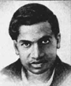
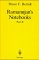

Srinivasa Ramanujan (1887-1920)
Ramanujan war ein autodidaktisches mathematisches Wunderkind aus einer Stadt in der Nähe von Madras in Südindien und kam aus einer armen Familie. Madras war 1600 km von dem welt-städtischen Kalkutta entfernt.
1913 begann die Korrespondenz mit G.H. Hardy und 1914 erhielt er ein Stipendium für einen Aufenthalt am Trinity College in Cambridge, damit er dort seine Begabung in die Zusammenarbeit mit den Wissenschaftern einbringen und von ihnen alles, was sie wussten, lernen konnte. In dieser Zeit schuf er in einem für ihn fremden und kalten England mit 21 grossen Arbeiten ein dauerhaftes mathematisches Erbe. Aus gesundheitlichen Gründen kehrte er jedoch 1919 nach Indien zurück, wurde empfangen wie ein Held und starb im Jahre 1920.
Erstaunlich war seine Fähigkeit der Umformung unendlicher Reihen. Ramanujan erhielt viele seiner Ergebnisse intuitiv aus einer Vielzahl von Zahlenbeispielen und hatte ein ausgezeichnetes Gedächtnis und eine Fähigkeit zur Durchführung komplizierter Rechnungen. Seine Gedankensprünge machten den Mathematikern noch sieben Jahrzehnte nach seinem Tod zu schaffen.
Zahlreiche Resultate sind in Briefen an G.H. Hardy formuliert. Ihm verdanken die Zahlentheoretiker bemerkenswerte asymptotische Formeln, ferner Ergebnisse zur Partition natürlicher Zahlen, zur Theorie der elliptischen Funktionen und zu Kettenbrüchen.
Ramanujan, der sein ganzes Leben an Hindu-Gottheiten glaubte und sich das Land des Unendlichen (im mathematischen und spirituellen Sinn) zu eigen machte. 'Eine Gleichung hat für mich keinen Sinn', so sagte er einmal, 'es sei denn, sie drückt einen Gedanken Gottes aus'.
Seine Biographie ist 1995 von Robert Kanigel unter dem Titel 'Der das Unendliche kannte' im vieweg-Verlag erschienen.


Ramanujan's Notebooks.2
Bruce C. Berndt
Der das Unendliche kannte
Robert Kanigel